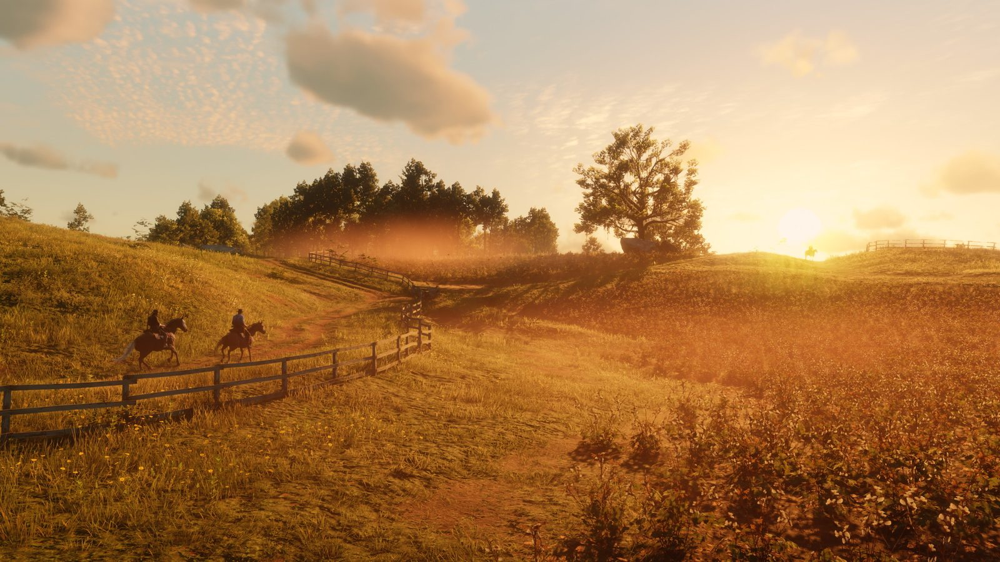

Actus · Analyse Mise à jour next-gen de RDR2 : ce qui a vraiment été dit en 2026 Rockstar n'a toujours pas annoncé de version PlayStation 5 ou Xbox Series X|S de Red Dead Redemption 2. Depuis un an, des insiders assurent qu'elle existe et qu'elle était prévue pour 2026. À moins de trois mois de la fin de l'année, et avec Grand Theft Auto VI attendu le 19 novembre, voici tout ce qui a réellement été dit, daté et attribué. 8 octobre 2026 Par Joseph Lambert 4 min de lecture  RDR2 sur les consoles actuelles Red Dead Redemption 2 est sorti sur PlayStation 4 et Xbox One le 26 octobre 2018, puis sur PC le 5 novembre 2019. Sur PlayStation 5 et Xbox Series X|S, on y joue grâce à la rétrocompatibilité, dans sa version de la génération précédente. Sur console, il reste bloqué à 30 images par seconde. Rockstar n'a jamais annoncé de version native pour les consoles actuelles. Le précédent : Red Dead Redemption en décembre 2025 Le 13 novembre 2025, Rockstar a annoncé Red Dead Redemption et Undead Nightmare sur PlayStation 5, Xbox Series X|S, Nintendo Switch 2, iOS, Android et dans le catalogue mobile de Netflix. Le jeu est sorti le 2 décembre 2025, 19 jours après l'annonce. Sur PS5 et Xbox Series, il tourne à 60 images par seconde, jusqu'en 4K, avec HDR. Les possesseurs des anciennes versions console ont eu droit à la mise à niveau gratuite. Ce que disent les insiders, dans l'ordre Octobre 2025 : Rockstar modifie la description de la page Steam de RDR2, une première en plus de cinq ans, relève RDR2.org. Le même mois, Reece « Kiwi Talkz » Reilly dit avoir parlé avec des développeurs d'une version pour les consoles actuelles, sans date de sortie. Novembre 2025 : après l'annonce de Red Dead Redemption, l'insider NateTheHate affirme que les projets pour RDR2 sont « toujours d'actualité », selon RDR2.org. Janvier 2026 : Kiwi Talkz dément avoir confirmé une sortie fin 2027 et qualifie ses déclarations précédentes de « suppositions éclairées ». Février 2026 : à qui lui demande si la sortie a glissé à 2027, NateTheHate répond qu'à sa connaissance, RDR2 est prévu « cette année » (rapporté par Insider Gaming le 6 février). 26 avril 2026 : Rockstar répare la galerie du site officiel de RDR2, avec une visionneuse d'images proche de celle du site de GTA VI. Le jeu, lui, ne change pas. 29 juin 2026 : Kiwi Talkz écrit que cette version existe « c'est un fait », et que les développeurs indiens qui y travaillent ne décident pas de la date. Ce qui n'a pas eu lieu Ni Rockstar ni Take-Two n'ont annoncé de version de Red Dead Redemption 2 pour les consoles actuelles. Aucune des déclarations ci-dessus ne vient de l'une ou l'autre entreprise. En juillet 2026, GamingBible écrivait qu'il était temps d'accepter que RDR2 ne recevra peut-être jamais de mise à jour next-gen. Le calendrier de Rockstar tourne désormais autour de Grand Theft Auto VI, attendu le 19 novembre 2026. Où en est-on au 8 octobre 2026 Confirmé : sur PS5 et Xbox Series, RDR2 ne tourne qu'en rétrocompatibilité, à 30 images par seconde. Confirmé : Red Dead Redemption a eu ses versions natives le 2 décembre 2025, annoncées 19 jours plus tôt. Rapporté : deux insiders affirment qu'une version next-gen de RDR2 existe ; l'un d'eux la situait en 2026. Non confirmé : date, plateformes, prix ou conditions de mise à niveau. À lire avec la façon dont Rockstar annonce réellement ses jeux : le portage de Red Dead Redemption, en 2025, a été annoncé comme les autres sorties du studio, sur le Newswire de Rockstar.